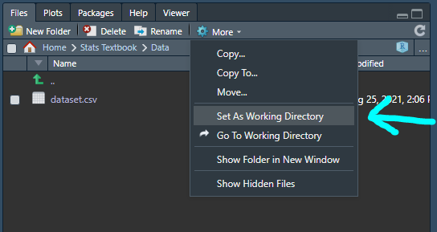

Chapter 3 Functions and Libraries
In the first chapter, we got our first introduction to R. We learned how we can use R to communicate with our computer and ask it to do things that we would rather not do ourselves. Some these instructions are pretty intuitive to us - for example, telling the computer to add a few numbers together is pretty straightforward. However, sometimes we want the computer to do some pretty complicated tasks that require many steps. Many statistical techniques are quite involved and require many computational steps for the computer to undertake - and, yes, someone has to write out these computational steps (HINT: don’t worry, that someone is usually not you!). Even just making a summary table of all your variables of interest can involve many steps. If a variable is continuous you need to take the mean and standard deviation, if it is categorical you need to calculate frequencies and proportions. And maybe, while we are at it, we want to stratify our descriptive statistics based on exposure group (control versus exposed), so we also would like to run the appropriate statistical tests (t-tests, ANOVA, chi-squared) and report the p-values.
The task I have just described is quite important in public health research. When we write a paper, it is very important that the reader knows who our study sample is as well as key differences between groups of interest within our sample. This information is so important, in fact, that it is typically the first table (TABLE ONE!) of human subjects research papers. Even though descriptive statistics and t-tests aren’t the most complicated thing to do (if you so desired, you could run them by hand), the computer requires many many instructions to complete this task. For each variable you want descriptives for, the computer has to identify the type of variable (continuous, categorical, etc), then has to calculate means & standard deviations or frequencies & proportions, and, then, if applicable, run appropriate statistical tests. Then after the computer does all of this, it needs to format the information in a way that we can easily read and work with it.
If you’re thinking to yourself, “that sounds like it takes a lot of code to do!!!” I would tell you that “you are quite correct!” The good news is that R has a feature that makes communicating complicated tasks to the computer quite simple and that many people have dedicated a lot of time to writing the code to do these complicated tasks for you already! The important thing though is to learn how this works and how to use them effectively for yourself!
In this chapter we will talk about functions, packages, and your library. A function is simply a collection of lines of code that are stored so that, instead of needing to rewrite all of the code every time you want to use it, you can just “call” the function with a single line of code and the computer will actually run all of the lines of code! A library is a collection of functions…in a way its a cookbook that you can load into R and then use the functions to complete given tasks. Don’t worry if this is confusing, it will make sense soon!
3.1 Okay, wait…What’s a function?
You’ve already seen a few functions from the first chapter. Whether it was running \(c(1,2,3)\) or \(summary(vector)\) or \(data.frame(vector1,vector2,vector3)\), each of these were functions. You can usually recognize functions in R because they have two main parts: the first is a name (such as “c” or “summary”) and the second part is a set of parentheses containing arguments. The name is actually associated with some code that isn’t visible to you (unless you do some digging). When you run \(summary(vector)\), the computer doesn’t just read “summary” and think to itself, “well, I think my user wants the mean and median of the numbers in this vector.” In fact, there are many lines of code associated with the “summary” function that the computer runs in the background.
3.1.1 A Real World Example of a Function: Buying a Cake
To display what a function is, let’s look at a real world example. It is my partner’s birthday in a few days and I am not a very good baker. I go to this bakery that I hear has the very best cakes. In this analogy, I am the coder and the bakery is the computer. So I walk into the bakery and I say to the baker:
Please make me a cake, esteemed and talented baker!
This would sort of like if there was a \(bake\_cake()\) function in R and I told the computer-baker:
bake_cake()And the baker responds:
Can do! It will be ready in a few hours.
You see, all I had to do was tell the baker to make the cake. It turns out the baker already has the recipe for making cake. That recipe is sort of like R code - it would be pretty frustrating to have to explain to the baker how to make the cake just like it would be frustrating to have to write every line of code for a complicated task.
So, I go to the cafe next door and work on some other projects while the cake is being compiled…I mean while the cake is being baked! When I return to the bakery, the baker hands me a beautiful, albeit incredibly plain cake - just a rectangular cake with white frosting. Now I look at the cake and my first instinct is to be frustrated because, well, this is a birthday cake and a plain white cake isn’t going to cut it. But I realize this is my fault, I didn’t tell the baker what kind of cake I wanted (remember, if the computer doesn’t do what you wanted, then it means you didn’t tell it the right thing!)
So, I say to the baker:
Wow that is a beautiful cake! Turns out I actually need another cake. This time could you make it a circle, with light pink frosting, dark pink roses around the rim, and in dark pink could you please write “Happy Birthday, Angel!”
Now, in R I could communicate this to the computer-baker in R by saying:
bake_cake(shape = "Circle",
frosting_color = "Light Pink",
roses = TRUE,
rose_color = "Dark Pink",
message = "Happy Birthday, Angel!",
message_color = "Dark Pink")In this example, we used arguments to provide more information to the computer to complete the function for us. Arguments are built into a function - so when someone makes a function, they decide what arguments a function can take in. Whoever made the \(bake\_cake\) function made sure to include arguments (i.e., shape, roses, rose_color, etc) that would allow us to specify what kind of cake we want.
So I go back to the cafe after making my order and when I return, lo and behold, before me is the cake that I wanted!
First, I apologize if this example made it seem like you could use R to tell your computer to make a cake – that was misleading of me and I apologize. Your computer cannot make a cake. More importantly, though, this interaction displays the power of functions in R. Applying statistical concepts often involves running very complicated sequences of tasks - while it is important that we understand how they work, it is far too complicated (and also not a good use of time) to try to write code out for every single step of these procedures.
As such, we can use specific functions to undertake complicated tasks with easy to write code. Each function has a unique set of arguments that we can also apply in order to provide information to the computer to complete the task as we desire it!
3.1.2 Picking Functions in R: The read.csv() function
3.1.2.1 Finding Functions
When we want to complete a task using R, there are a couple of important questions to ask. The first is: “Is there a function already built that can do this task?” If you have completed this task before, then you just need to find the function from last time you used it. If not, then it’s time to use Dr. Google (alternatives include flipping through the index of an R coding book or asking your statistics teacher!). For example, maybe your PI gave you a .csv file containing the dataset you want to work with and you want to know if you could load the dataset using R so you can work with it! You type into Google:
How do I load a csv file in R?
Using this search you find many, many articles with tutorials on how to do so. After clicking a few, you discover that the \(read.csv()\) function appears to be the perfect function for undertaking this task.
3.1.2.2 Figuring Out How the Function Works
So, a really cool thing about R is that every function has a documentation file. This is a file which tells you all about the function. It tells you what the function is for, it tells you what arguments the functions can take, it tells you which arguments are required and which are optional, and it tells you what information the computer will return to you at the end. You usually can find the documentation file by typing something like “read.csv() documentation” into Google. However! We are using RStudio so you can find this information without going online.
In the bottom right corner of RStudio (unless you changed your settings), there is a pane that has 5 tabs: Files, Plots, Packages, Help, and Viewer. You can view documentation files in the Help tab. So, click on the Help button – there is a little icon of a house, click on that too!. The view in this pane should look like this:
In the top right, there is a text entry with a magnifying glass. You can type in the name of the function you want to learn about here. In this case, “read.csv.” RStudio may try to create a drop down list based on what you type. Either click on the option for “read.csv” or finish typing “read.csv” and hit enter. The Help pane will take you the documentation file, which looks like:
Hmm, this page has multiple functions on it, but we can see that the one we wanted is the second in the list. Let’s just take a look at the function we want and try to decipher what it is saying:
This provides us an overview of the arguments that the read.csv function can accept. First, we can see that there is only one REQUIRED argument, the one called file. How do we know that it is required? Because it does not have an \(=\) after it. The function is basically saying, “I need you to tell me what file you want me to read, because I can’t even guess what you want!” All of the other arguments are optional. You can tell because the function assigns a default value for each one. For example, if you ran the function without specifying a value for the “header” argument, then the computer will assume that header = TRUE because that is how the function was written. We can see that all of the arguments besides “file” are optional.
But, it isn’t totally clear what these arguments actually mean! So, how do we find out? We just scroll down a little bit and see that we have descriptions of every single argument! How nice! For this function, there are three really important ones to know, pictured here:
We can see the following important information:
- the “file” argument refers to “the name of the file which the data are to be read from”
- the “header” argument indicates to the computer whether or not the first row of the CSV has column names or not
- the computer will assume that the first row has column names if you do not specify because the default is header = TRUE
- the “sep” argument indicates to the computer what character separates data within the file
- a CSV file stands for Comma-Separated Values, so it makes sense that the sep argument defaults to a comma
You might be seeing that really long description of the “file” argument and wondering what on earth all of that is about. It is trying to tell you that you need to make sure the file you want to read is somewhere that the computer can find. So, earlier I had you download a CSV file and save it in a place that makes sense. Your computer has a default location it assumes when you start working in R. You can find it by typing the following code:
getwd()## [1] "C:/Users/Charl/OneDrive/Documents/Intro to Applied Stats with R"Basically, your computer is full of folders and different locations where files can be saved. You can think of each folder as a room – and your computer can only be in one room at a time (this sort of sounds like computers are conscious…maybe they are?). When we type in \(getwd()\), we are basically just finding out what room (i.e., folder) our computer is currently in. We call this room the “Working Directory” - it’s not super important to remember the name, but that’s what the “wd” in “getwd” stands for. So now, we want to set the working directory of the computer to correspond to the location where you saved the csv file I had you download. In order to find the correct folder, we are going to look in the pane in the bottom right again. This time, instead of clicking the “Help” tab, we are going to click the “Files” tab, which will give you a display that looks like this:
Now we are going to navigate by clicking on the appropriate folders to the folder (aka the room) where the CSV is. Just because our display is showing the folder we want does not mean that the computer knows this is the room it is supposed to be in. To tell the computer that this is the right place, click on the “More” button with the drop down arrow and select the option “Set As Working Directory,” like so:

Now that we are in the correct directory, we can actually load the dataset by using the \(read.csv()\), like so:
df <- read.csv("dataset.csv")
dfWe can take a look and we can see that we now have a data frame object called df and it contains the data from the CSV file! We did not modify any of the optional arguments because it was not necessary to do so!
3.2 Breather Time
Ok. That was a lot of info. If you’re just reading through, this is definitely a good spot to take a little breather, drink some water, stretch it out. We covered a bunch of stuff: what a function is, how to use functions, how to navigate the help pane in RStudio, and how to navigate folders and set the correct working directory!
Especially if this is new for you, this might be pretty overwhelming. The good thing is that, when we use R for statistics work, loading data files is almost always the very first step so you will get lots of practice with this.
Now, not every data file is going to be in CSV format. You might have an .xlsx file or a SAS file or an SPSS file or something else altogether. A quick Google search will usually tell you how to load these files, but, for simplicity, in the copy pasta file at the end of this chapter, I have included functions for loading common types of data files with R!
3.3 Looking Under the Hood: Writing Our Own Function
Now that we have a grasp on what a function is and how it works, let’s actually write our own function. Don’t worry! Writing your own functions isn’t common, but, you might just find as you get better at coding in R that writing your own functions will come in handy!
As discussed before, functions allow us to tell the computer to do a series of complicated tasks with only one line of code. For example, the \(read.csv()\) function has a lot to it - the computer has to open the file, read each piece of data, convert it into a data frame, and then save it. All we had to do, though, was write just one line of code. That’s because somebody else wrote all those other lines of code – they’re just invisible to us.
So, to understand better how this works, we are going to write our own function and then use it. We are going to write a function that converts Fahrenheit to Celsius. There is a simple equation for converting a Fahrenheit temperature into celsius: \(Celsius = (Fahrenheit - 32)*(5/9)\). I’m going to call my temperature converter “fahrenheit_celsius_converter.” I can create the function like so:
## We will name our new function fahrenheit_celsius_converter
## here we are saying our function will have one required argument called temp
## temp is required because we did not assign it a value with the = sign
fahrenheit_celsius_converter <- function(temp){
## we generate our new temperature value using the formula to convert fahrenheit to celsius
new_temp <- (temp - 32)*(5/9)
## We then "return" the new temperature we have calculated
## We use the return function to tell the computer this is the value we want it to spit out, so to speak
return(new_temp)
}So, now we can see from the above code that we have made a function and it converts a fahrenheit temperature to a celsius temperature. I have used lots of comments to help make sure that a reader can understand what the function does. Let’s quickly test out the function to make sure it works. Some well known values are that freezing in Fahrenheit is 32 and freezing in Celsius is 0 and boiling in Fahrenheit is 212 and in Celsius is 100:
fahrenheit_celsius_converter(32)## [1] 0fahrenheit_celsius_converter(212)## [1] 100Super cool! Now we no longer need to have that formula memorized (thank goodenss, right?!)! We can just use our function and the computer will go fetch the correct code!
Now let’s add a little bit more complexity to our code! Just for fun (isn’t this fun :)?) I am even going to throw in a few functions that you haven’t seen before. Don’t worry a bit! This is just to help get you a little more exposure to some cool tools at your disposal. I want to create an argument for this function that, instead of printing out a numeric value, will print out a sentence stating “X degrees Fahrenheit is the same a Y degrees Celsius.” Here’s what that function looks like (there is more than one way to do this):
## Here we define our function
## We have two arguments
## The first, temp, is required and is the temperature (in Fahrenheit) being fed into the function
## The second, text, is optional. Its default value is false.
## When text is set equal to TRUE, the function will print out the text version of our conversion
fahrenheit_celsius_converter <- function(temp, text = FALSE){
## we generate our new temperature value using the formula to convert fahrenheit to celsius
new_temp <- (temp - 32)*(5/9)
## Introducing the if statement
## We can use the if statement to tell the computer to do different things based on different parameters
if(text == FALSE){
## Here we are saying that if the text argument is FALSE, just return the converted value
## This is the same as our original function
return(new_temp)
}
## What is cool about an if statement is that you can follow it with an ELSE IF statement
## This just tells the computer that if the first if statement wasn't true, to try to do this one instead
else if(text == TRUE){
## So here, we want to print "X degrees Fahrenheit is the same a Y degrees Celsius"
## Where X = temp and Y = new_temp
## First, temp and new_temp are numeric, but we want them to be character types (because we are printing text!)
## We can use the as.character() function to make this conversion like so
temp <- as.character(temp)
new_temp <- as.character(new_temp)
## So, now I will introduce you to the paste function
## The paste function lets you stick together character objects to make one longer object
output <- paste(temp, "degrees Fahrenheit is the same as", new_temp,"degrees Celsius", sep = " ")
## notice the term sep = " "
## I am telling the computer to stick together these four pieces of text and to put a space (" ") in between each one
return(output)
}
## now, there is always the possibility that someone decided to do something silly like set text = 42
## there are some other ways to catch this but one way is to use one more ELSE statement
## in this case we don't need to use an IF because there isn't anything specific that matters, logically
## if we have gotten to this else statement it means something is wrong
else{
return("The text argument needs to equal TRUE or FALSE -- please try again!")
}
}Now, don’t worry one bit if some of that just went straight over your head. I showed you this so you can see that even really simple tasks can get a bit complicated really easily. You’ll also notice that I wrote a lot of comments alongside the code. I encourage you to always comment your code thoroughly. It’s not just because someone else might read your code, but let me tell you, if you don’t look at your code for a few weeks, when you come back it might look like gibberish. Commenting your code is a great way to make sure you don’t forget what on earth you did!
And isn’t it nice that now we don’t have to type all of that out ourselves. Check out how easy it is to use this function with just one line of code:
fahrenheit_celsius_converter(32)## [1] 0fahrenheit_celsius_converter(32, text = TRUE)## [1] "32 degrees Fahrenheit is the same as 0 degrees Celsius"fahrenheit_celsius_converter(32, text = 12)## [1] "The text argument needs to equal TRUE or FALSE -- please try again!"Alright alright alright, thanks for bearing with me! I promise that my intentions are good and that knowing how to make a temperature converting function will help you as a statistician!! The main takeaway is that functions provide us with an easy way to apply very complicated tasks. In later chapters we will learn how to use various functions that allow us to run different methods like regression - you don’t have to know how all the machinery on the inside of the function works, but it is important to understand how to use functions and to understand how they function so you can apply them correctly!
3.4 So What’s A Library?
So far, we have already used some cool functions like \(c()\), \(summary()\), and \(data.frame()\). These functions are “built in” to R, so to speak. Our library is the set of functions that we have loaded into our R session! When you open R, certain functions are already pre-loaded into our library. These are functions that are generally considered so integral to using R that it made sense to have them ready to go when you start working.
3.4.1 How do I see what is in my library?
Great question! In order to see what you have loaded in your library, you can start by running the \(sessionInfo()\) function like so:
sessionInfo()## R version 3.6.1 (2019-07-05)
## Platform: x86_64-w64-mingw32/x64 (64-bit)
## Running under: Windows 10 x64 (build 19042)
##
## Matrix products: default
##
## locale:
## [1] LC_COLLATE=English_United States.1252
## [2] LC_CTYPE=English_United States.1252
## [3] LC_MONETARY=English_United States.1252
## [4] LC_NUMERIC=C
## [5] LC_TIME=English_United States.1252
##
## attached base packages:
## [1] stats graphics grDevices utils datasets methods base
##
## loaded via a namespace (and not attached):
## [1] bookdown_0.21 digest_0.6.27 R6_2.5.1 jsonlite_1.7.2
## [5] magrittr_2.0.1 evaluate_0.14 stringi_1.5.3 rlang_0.4.12
## [9] rstudioapi_0.13 jquerylib_0.1.4 bslib_0.3.1 rmarkdown_2.11
## [13] tools_3.6.1 stringr_1.4.0 xfun_0.26 yaml_2.2.1
## [17] fastmap_1.1.0 compiler_3.6.1 htmltools_0.5.2 knitr_1.30
## [21] sass_0.4.0We have a few headers of interest: “attached base package” and “other attached packages.” We see here this word package. A package is simply a set of functions that can be loaded into your library. Packages are designed and written by people – each package usually has some set of specific, unifying functionality that can help you in some way. For example, the \(stats\) package contains functions that allow you to easily run regression models and the \(ggplot2\) package contains functions which can help you plot data.
An easier way to see which packages you have in your R session is to click on the “Packages” tab in the bottom right pane like so:
Here we see a list of A LOT of packages. These are all of the packages currently downloaded onto my computer. If the checkbox next to a package is marked, that means the package has been loaded into my library. If it isn’t marked it means that the package is not loaded. In order to use a package, we must load it into our R session. We don’t load all of the packages we have at once because that would overload our computer. I won’t get into how R works, but the computer doesn’t like it when we load lots of information in R (don’t worry, for most of our statistics projects, this is not a concern!).
There are two ways to load a package into our library. The most common is to use the \(library()\) function. We simply add the name of the package we want to load and it will load the package into our library. Let’s say I want to load the \(tidyverse\) package. I would do that like so:
library(tidyverse)Now, you see the computer gave us a bunch of warnings. That can look a little bit concerning, but I would like to point out two different kinds of message the computer will give you. A warning is a message that the computer provides that basically says “Hey, I did what you asked me to do, but here is something you should be aware of!” An error message is when the computer fails to do what you’ve asked - when the computer throws an error, that means it tried to do something and it crashed.
Anyway! The other way to load a package into your library is to just scroll down to it in the packages pane and just click on the checkbox!
3.4.1.1 What if I want a new package that isn’t on my computer?
When you first start using R, you won’t have very many packages on your computer. You have to download them. Packages are basically just expansion packs for R. Sometimes it can feel overwhelming figuring out what packages to use and, honestly, there are many many ways to complete the same task. Googling and asking other statisticians which packages to download is an important way to find new packages.
Now, usually packages correspond with a task you are interested in. For example, if you want to run a mixed effects regression model, the \(lme4\) package was designed exactly for that purpose! If you want to run a mediation analysis, one option is the \(mediation\) package. How do I know this - a bit of Googling, a bit of asking around, reading academic manuscripts methods sections, reading the supplemental code attached to a manuscript, reading statistics textbooks, watching YouTube statistics tutorials, and, perhaps most importantly, by reading Q&As on Stack Overflow. Stack Overflow is a forum where people can ask questions and the public can respond. You will likely find your answers to your R questions on Stack Overflow (or Reddit, actually), unless you are doing some real niche stuff!
I actually would like to share with you one of my absolute favorite packages: \(tableone\). We are going to be using this package a lot! This package is for building descriptive tables of your study sample. It is called tableone because Table One in a human subjects research paper is typically the table describing the study sample. I would say this is the most important table in your entire study! If you don’t know who is in your study, then, umm, how do you know what you’re studying???
So, it turns out that the tabelone package isn’t automatically built in to R. We have to download it. We have two options. The first is the click and point way. In the “Packages” pane, click on the “Install” button, like so:
You can then start to type in the name of the package we want, “tableone,” in the appropriate box, like so. Notice how it will provide you a dropdown of available packages. These are packages that have been registered so that the computer knows to find them:
Type in the full name of the package you want or click on it when you see it. Then you will click the “Install” button like so:
Et voila! You have downloaded the package. You can also install the package by running the \(install.packages()\) function like so:
install.packages("tableone")Usually, when you install, you will get a lot of messages. At the end, you want to see the message “The downloaded source packages are in….” If you get an ERROR message, that means your computer failed to download the package.
Now that we have downloaded the package, we can simply add it to our library by typing in:
library(tableone)So, that’s pretty darn cool! The cool thing about R is that all the expansion packs are free!!!
3.5 Quick word of caution
R is awesome, in part because it is free. It is an open source software which means that anyone can write packages for R and register them. That doesn’t mean that they are inherently untrustworthy, but it does mean we need to develop a spidey-sense for when a package might be suspect. You know how on Wikipedia, sometimes there is a message that says something like “This article doesn’t appear to have sources” - well, it is important to be able to always ask if a package is a good one for what you want to do. The nice thing about R is that there is a huge community of users online that discuss these things. Some packages are so commonly applied that the statistics community has come to trust in them. Code was written by people and people make mistakes…remember, the computer just does what you tell it to do, if you tell it the wrong thing then it’ll do the wrong thing. The takeaway of me telling you this is that when you use a new package, do a little vetting. Ask your stats professor, ask the internet, read up about it!
One hint I will give you (and let me tell you this is not a rule by any means) is to look at the documentation files for the package you are considering to use! The more useful this file is, the more likely this is a good package. If you open a documentation file and it barely tells you anything – run!
3.6 In Conclusion
Functions are an important part of coding in R. Nearly all statistical algorithms will be run by calling functions. Understanding what a function is and how they operate will help you better understand what is happening when you use them. While you won’t necessarily ever need to write your own functions, being able to do so will also empower you to take on complicated quantitative approaches as you become a more advanced statistician!